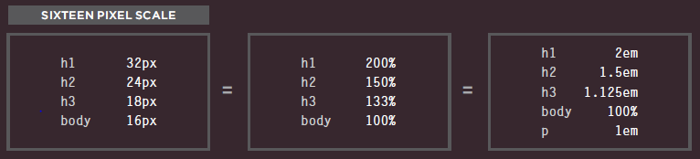

Size of elements by using %, em, rem and their effect on browsers
Date: 18-March-2020
There are different units of type size.
- Pixels
- Setting font size in pixels is the
best way to ensure that the type
appears at the size you intended
(because percentages and ems
are more likely to vary if a user
has changed the default size of
text in their browser).
Pixels are relative to the
resolution of the screen, so the
same type size will look larger
when a screen has a resolution
of 800x600 than it would when
it is 1280x800.
- Percentages
-
The default size of text in a
web browser is 16 pixels. Using
percentages of this amount, you
can create a scale where the
default text size is 12 pixels, and
headings are sized in relation
to this.
It is possible for users to change
the default size of text in their
web browsers. If they have
done this, the fonts will be
displayed at the same scale that
the designer intended, but at a
larger size.
- Ems
-
Ems allow you to change the size
of text relative to the size of the
text in the parent element. Since
the default size of text in web
browsers is 16 pixels, you can
use similar rules to those shown
for percentages.
Because users can change
the default size of text in their
browser, the fonts could all
appear larger (or smaller) than
the designer intended.
- Rem
-
The main problem with em units is that they are relative
to the font size of their own element. As such they can cascade and cause
unexpected results. The
rem
is named as root em
. As all the sizes are referenced
from the root font size, there is no need to cover the nesting cases in separate declarations.

By default browsers usually have a font size 16px, but this can be changed to anywhere from 9px to 72px by the user.
What happens when changing the default browser 16px font-size to 200px?
Date: 18-March-2020
What really occurs here is that more pixels are added to the default one to increase the size of the
text content. The font size property specifies the size, or height, of the font. font-size affects not only the
font to which it is applied, but also used to compute the value of em, rem length units.
The specific changes in CSS3
Date: 18-March-2020
The specific changes in CSS3 include several new CSS properties.
Many of these properties create visual styles that would likely associate more graphics program like
Photoshop. Also, properties like
border-radius or box-shadow, have been around since the introduction of CSS3. Others, like Flexbox or even
CSS grid are newer styles that are still often considered CSS3 additions.
There are three new attribute selectors in CSS3.
- Attribute beginning matches exactly: The element has an attribute called foo that begins with "bar"
eg.
element[foo^="bar"]
- Attribute ending matches exactly: The element has an attribute called foo that ends with "bar"
eg. element[foo$="bar"]
- Attribute contains the match: The element has an attribute called foo that contains "bar" eg.
element[foo*="bar"]
There is also 16 new psedo-classes introduced.
- :root
-
The root element of the document.
- :nth-child(n)
-
Use this match exact child elements or use variables to get alternating matches.
- :nth-of-type(n)
- Match sibling elements with the same name before it in the document tree.
- :nth-last-child(n)
- Match exact child elements counting up from the last one.
- :last-child
- Match the last child element of the parent.
- :nth-last-of-type(n)
- Match sibling elements with the same name counting up from the bottom.
- :first-of-type
- Match the first sibling element of that type.
- :last-of-type
- Match the last sibling element of that type.
-
:only-child
- Match the element that is the only child of its parent.
- :only-of-type
- Match the element that is the only one of its type.
- :empty
- Match the element that has no children(including text nodes).
- :target
- Match an element that is the target of the referring URI.
- :enabled
- Match the element when it's enabled.
-
:disabled
- Match the element when it's disabled.
- :checked
- Match the element when it's checked(radio button or checkbox).
- :not(s)
- Match when the element does not match the simple.
There is one new combinator:
- elementA ~ elementB
- Match when elementB follows somewhere after elementA, not neccessarily immediately.
New Background Style properties
There are also some new background properties in CSS3.
-
Background-Clip
- This property defines how the background image should be clipped.
The default is the border box, but it can be changed to the padding box or content box.
-
Background-Origin
- This property determines whether the background should be placed in the padding box, the
border box, or the content box.
-
Background-Size
- This property indicates the size of the background image. It allows you to strech smaller
images to fit the page.